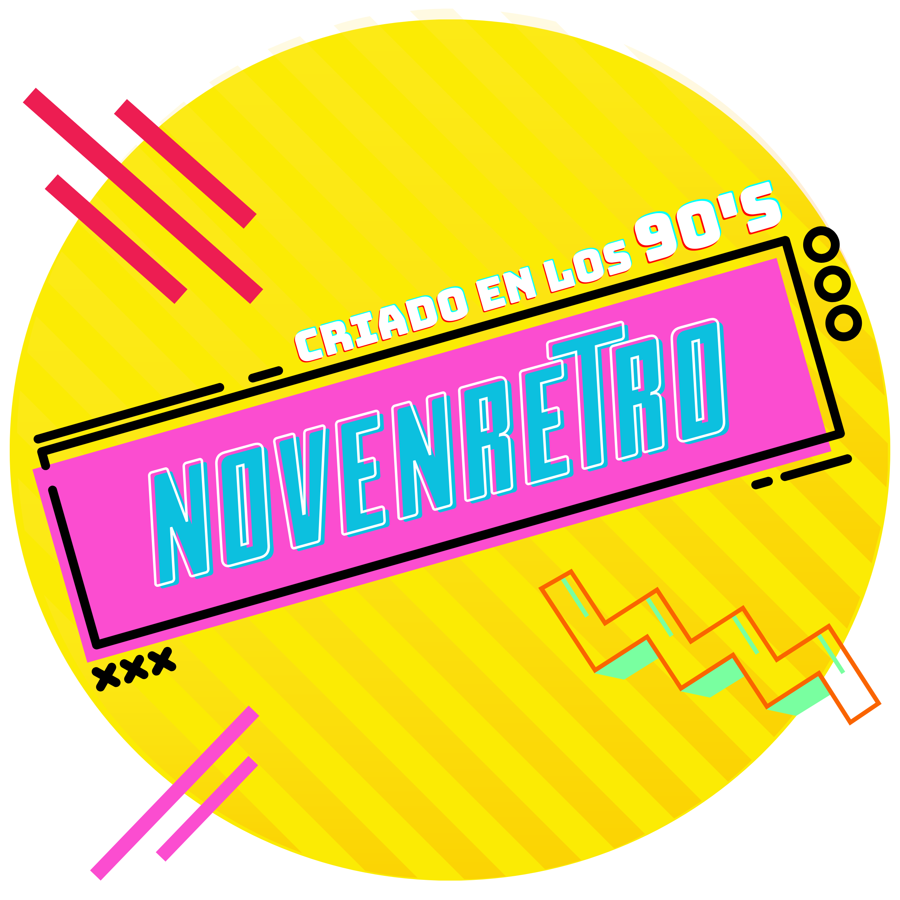

Firmware de Mando Bluetooth GENESIS/MEGADRIVE
Conectá tu ESP32 por USB, seleccionalo entre los COM que puedan aparecerte y presioná el botón para cargarle el firmware.
Puede que sea necesario que mantengas apretado el botón de Boot de tu ESP32 mientras se realiza el proceso.
Recuerda debes ingresar desde Google Chrome o Edge en PC para que funcione correctamente.
Atajos y combinaciones
| Acción |
Combinación |
| Cambiar entre modo Switch y modo BlueGamepad |
START + MODE durante 5 segundos |
Atajos en modo Nintendo Switch
| Función |
Combinación |
| Capture |
MODE + LEFT |
| Home |
START + MODE pulsación corta |
Mapeo de botones
Modo Bluetooth / BlueRetro
| Botón físico Sega Genesis |
Salida Bluetooth |
| Cruceta | D-Pad |
| A | X |
| B | CIRCLE |
| C | L1 |
| X | SQUARE |
| Y | TRIANGLE |
| Z | R1 |
| Start | OPTIONS |
| Mode | SHARE |
Modo Nintendo Switch
| Botón físico Sega Genesis |
Función en Switch |
| Cruceta | D-Pad |
| A | A |
| B | B |
| C | L |
| X | X |
| Y | Y |
| Z | R |
| Start | + |
| Mode | - |